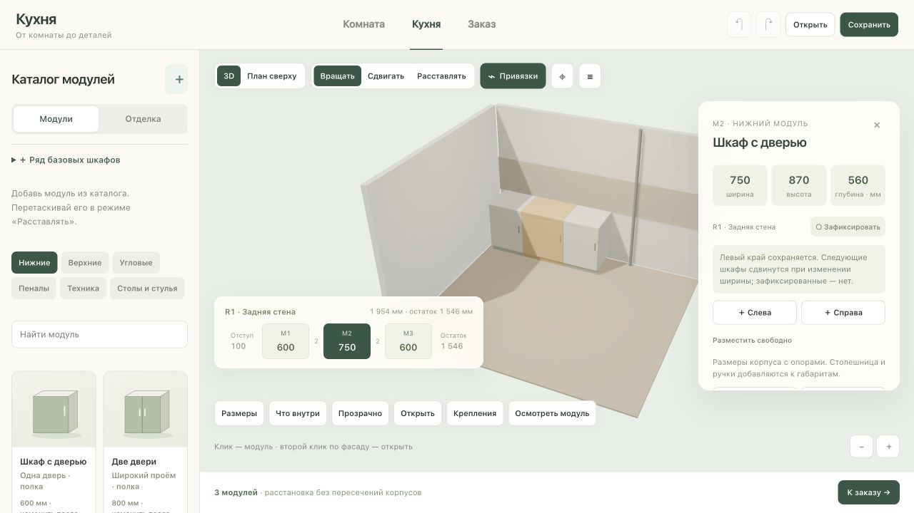

Конструктор кухни
Визуальный редактор для планирования кухни под свои размеры и подготовки чернового списка деталей. Одна параметрическая модель связывает помещение, расстановку, отделку и детали.
Открыть интерактивный конструктор
Комната
Прямоугольное помещение с шириной, глубиной и высотой в миллиметрах. Проёмы окон и дверей. Вертикальные трубы с диаметром, отступом от стены и высотой. Приблизительные или подтверждённые замеры и заметки. Некорректные размеры не заменяются молча.
Кухня
- Каталог нижних и верхних шкафов, пеналов, угловых вариантов, габаритных моделей техники, столов и стульев.
- Ряд базовых шкафов вдоль стены: ширина, количество, начальный отступ и зазор между корпусами.
- Изменение ширины пересчитывает ряд. Изменение отклоняется, если сдвигает зафиксированный шкаф или создаёт пересечение.
- Размерная цепочка показывает шкафы, стыки, отступ и остаток стены. Нажатие на размер открывает его редактирование.
- Вращение с ровным полом, сдвиг и масштабирование. Свободная расстановка с отключаемыми привязками.
- Цвета и ранее подключённые декоры, отделка, освещение, открывание дверей и ящиков, прозрачность и просмотр без фасада.
- Осмотр отдельного модуля и его деталей с устойчивыми номерами и размерами.
- Отмена, повтор, сохранение и открытие JSON. Старые проекты поддерживаются.
Заказ
Чистовые размеры, заготовки до кромления, кромки по сторонам, материалы, карты отверстий и сборка. CSV содержит номера, количество, версию конструктивного шаблона, ревизию, дату и статус черновика.
Присадка остаётся черновой. Точные сверла, глубины, петли, опоры, направляющие и операции цеха требуют выбранного комплекта и документации. Полная проверка монтажа не реализована. Столешницы и цоколи пока показаны для планирования и требуют отдельной деталировки.
Как проверить
Комната → Новое помещение → добавление проёма и трубы → Кухня → Ряд базовых шкафов → изменение ширины в размерной цепочке → Отделка → осмотр деталей → Заказ.
Проверено: независимый ручной расчёт восьми деталей базового шкафа, баланс длины ряда, четыре направления стен, геометрическое столкновение с трубой, фиксация, отмена/повтор, сохранение/открытие, неизменность размеров при смене отделки.
Эта страница доступна без JavaScript и входа. Сам интерактивный редактор использует Three.js / WebGL. Изменения, сохранённые только на устройстве посетителя, не становятся общедоступными автоматически.